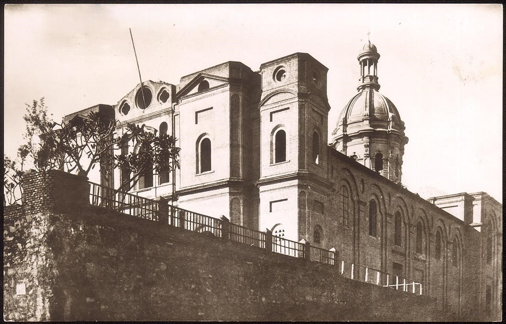

La Iglesia, bajo advocación mariana de Nuestra Señora de la Encarnación, se halla ubicada en una de las lomas de la ciudad, conocida como Volo Cué; es denominada también “Iglesia andariega” pues tuvo la peculiaridad de tener varios asentamientos antes de su ubicación actual.
Este edificio fue diseñado por el Arquitecto italiano Juan Colombo en el año 1893 y realizó la dirección de obras hasta su fallecimiento en el año 1902. Durante la contienda de la Guerra del Chaco (Años 1932-1935) el Templo La Encarnación, se utilizó como Hospital de sangre.
Sus diferentes ubicaciones fueron:
Primer Asentamiento- Años: 1539-1543, estuvo ubicada en la Barranca de la Bahía de Asunción, edificado por el Capitán Domingo Martínez de Irala.
Segundo Asentamiento- Años: 1543-1697, estuvo ubicado en el mismo lugar donde estaba la Casa Fuerte.
Tercer Asentamiento- Años: 1697-1797, estuvo ubicado sobre las ruinas de la Capilla de Santa Lucía.
Cuarto Asentamiento- Años: 1797-1818, estuvo en el predio comprendido en las calles La Encarnación (Hoy calle 15 de Agosto) y Presbítero Hernández (Hoy calle Palma).
Quinto Asentamiento- Años: 1818-1889 debido al derrumbe de la cuarta ubicación, tuvo que trasladarse al Convento de los Dominicos, pues dicha orden religiosa fue expulsada del país por el Dr. Gaspar Rodríguez de Francia, en esa época la iglesia sufrió refacciones, el Dr. Francia lo dedica a Parroquial luego de expulsar a los Dominicos e incautarse de sus bienes, demoliendo la antigua Iglesia y entregando al efecto la de Santo Domingo, En 1842 El Presidente Don Carlos Antonio López, edificó adyacente una escuela de primeras letras. La Iglesia de La Encarnación sirvió de Catedral durante los años 1842-1851.
Sexto Asentamiento- Años: 1889 a la actualidad, ubicado en la loma sobre las calles Eduardo Víctor Haedo (Ex calle Pilcomayo) 14 de Mayo y Humaitá.
Desde el punto de vista de la tecnología aplicada: El edificio, no posee las características de las demás iglesias del Paraguay, no pudiendo enmarcarse dentro de un estilo definido, además ha quedado inconclusa su terminación. La construcción, es de estilo romano -corintio, similar al de las catedrales europeas.
Para su construcción se utilizaron materiales propios de nuestro país: Piedras para cimientos, ladrillos y tejas de material cerámicos para los grandes muros y cubierta, maderas para tiranterías, entre otros. Se encuentran los muros revocados en su interior no así en el exterior del edificio.
Bibliografía:
Gutiérrez Ramón, Arq. Evolución Urbanística y Arquitectónica del Paraguay-1537-1911. Ediciones Comuneros Asunción Paraguay. Páginas 214-215
www.mopc.gov.py
Secretaría Nacional de Cultura (SNC) -Dirección General de Patrimonio Cultural Dirección de Registro de Patrimonio-Departamento de Registro de Patrimonio Cultural
Municipalidad de Asunción-Dirección General de Desarrollo Urbano-Dirección de Planeamiento U.-Departamento de Patrimonio Cultural